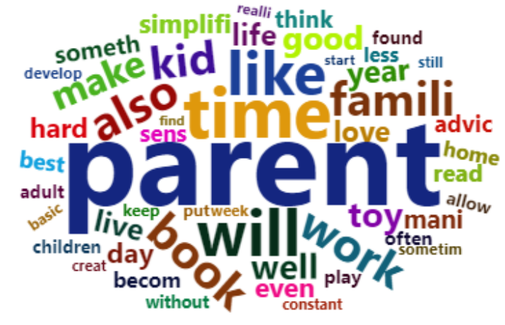

Installing and loading the package
Install the package:
install.packages("Goodreader")And load the package:
Searching for Books on Goodreads
The search_goodreads() function allows you to search for
books on Goodreads based on various criteria.
The code below searches for books that include the term “parenting” in the title and returned 10 books sorted by readers’ ratings
parent_df <- search_goodreads(search_term = "parenting", search_in = "title", num_books = 10, sort_by = "ratings")
summary(parent_df)
## title author book_id
## Length:10 Length:10 Length:10
## Class :character Class :character Class :character
## Mode :character Mode :character Mode :character
## url ratings
## Length:10 Min. : 8427
## Class :character 1st Qu.:11744
## Mode :character Median :13662
## Mean :19757
## 3rd Qu.:13784
## Max. :69591 You can also search author’s name:
search_goodreads(search_term = "J.K. Rowling", search_in = "author", num_books = 5, sort_by = "ratings") The search_goodreads() function includes a
sort_by that sorts the results either by
ratings or published_year:
search_goodreads(search_term = "J.K. Rowling", search_in = "author", num_books = 5, sort_by = "published_year") Scrape book metadata and reviews
After the books are found, save their IDs to a text file. These IDs are used for extracting book metadata and reviews:
get_book_ids(input_data = parent_df, file_name = "parent_books.txt") #the book IDs are now stored in a text file named “parent_books”Book metadata can then be scraped:
parent_bookinfo <- scrape_books(book_ids_path = "parent_books.txt", use_parallel = FALSE)To speed up the scraping process: Turn on the parallel process:
use_parallel = TRUE Specify the number of cores for
the parallel process (e.g., `num_cores = 8)
parent_bookreviews <- scrape_reviews(book_ids_path = "parent_books.txt", num_reviews = 10, use_parallel = FALSE) #users can also turn on parallel process to speed up the processConduct sentiment analysis
The analyze_sentiment() function calculates the
sentiment score of each review based on the lexicon chosen by the user.
Available options for lexicon are afinn, bing,
and nrc. Basic negation scope detection was implemented
(e.g., not happy is labeled as negative emotion and is assigned with a
negative score).
sentiment_results <- analyze_sentiment(parent_bookreviews, lexicon = "afinn")The average_book_sentiment() function calculates the
average sentiment score for each book.
ave_sentiment <- average_book_sentiment(sentiment_results)
summary(ave_sentiment)
#> book_id avg_sentiment
#> Length:10 Min. : 4.40
#> Class :character 1st Qu.: 7.25
#> Mode :character Median :12.86
#> Mean :12.95
#> 3rd Qu.:14.65
#> Max. :27.30The sentiment scores can be plotted as a histogram:
sentiment_histogram(sentiment_results)
Or a trend of average sentiment score over time:
sentiment_trend(sentiment_results, time_period = "year")
Perform topic modeling
Apply topic modeling to the reviews data:
reviews_topic <- model_topics(parent_bookreviews, num_topics = 3, num_terms = 10, english_only = TRUE)
#> Topic 1:
#> child, emot, children, feel, help, famili, work, can, time, like
#>
#> Topic 2:
#> parent, book, kid, read, just, think, say, dont, mani, want
#>
#> Topic 3:
#> book, parent, children, need, good, author, one, like, way, givePlot the top terms by topic:
plot_topic_terms(reviews_topic)
Create a word cloud for each topic:
gen_topic_clouds(reviews_topic)Topic 1: 
Topic 2:
Topic 3:
Other utility functions
The following table shows other utility functions to extract book-related information
| Function | Output | Description |
|---|---|---|
| get_book_ids() | Text file | Retrieve the book IDs from the input data and save to a text file |
| get_book_summary() | List | Retrieve the summary for each book |
| get_author_info() | List | Retrieve the author information for each book |
| get_genres() | List | Extract the genres for each book |
| get_published_time() | List | Retrieve the published time for each book |
| get_num_pages() | List | Retrieve the number of pages for each book |
| get_format_info() | List | Retrieve the format information for each book |
| get_rating_distribution() | List | Retrieve the rating distribution for each book |